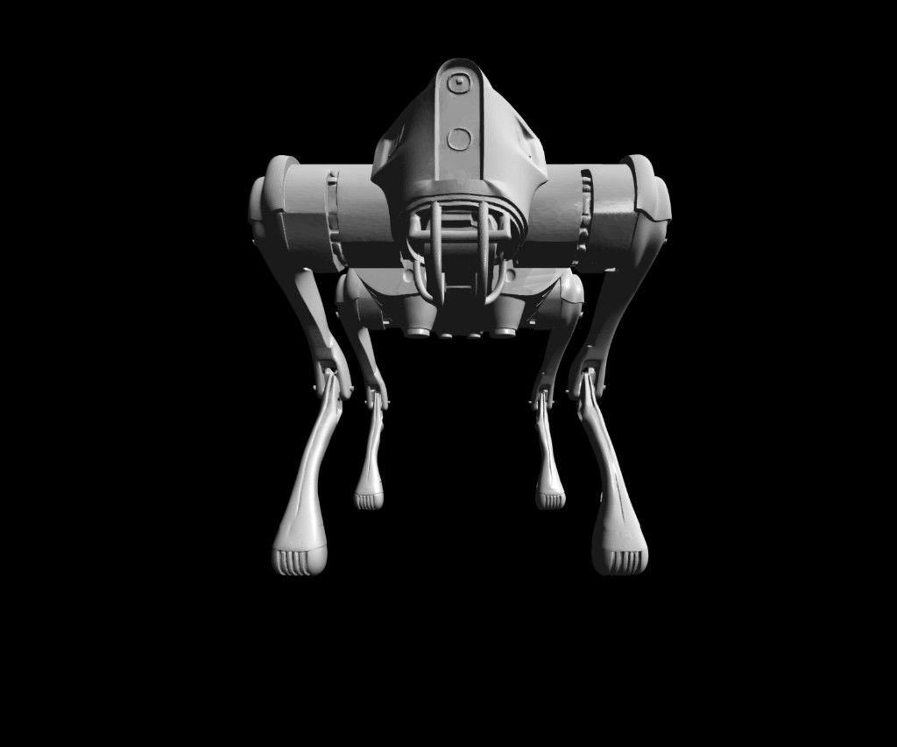

项目概述
这个实现不是“做一个能出图的玩具”，而是把现代渲染管线拆开后逐段落地。源码里把 Camera、MVP 变换、光栅化、透视正确插值、片元着色、ZBuffer 与纹理采样连成了完整的数据流，目标是建立对真实引擎渲染路径的可解释认知。
Featured Project
一个不用任何图形API，仅有必要的识别obj文件的库的最小渲染器。


这个实现不是“做一个能出图的玩具”，而是把现代渲染管线拆开后逐段落地。源码里把 Camera、MVP 变换、光栅化、透视正确插值、片元着色、ZBuffer 与纹理采样连成了完整的数据流，目标是建立对真实引擎渲染路径的可解释认知。
Vertex Processing：`shader.vertex()` 输出 clip 坐标，对应 VS 输出。
Rasterization：`rasterize()` 做覆盖判定与像素遍历，对应固定功能光栅阶段。
Fragment Shading：`fragment(bar)` 以重建属性计算颜色，对应 PS/FS。
Depth Test：`if (z <= zbuffer[idx]) continue;` 对应 Early/Late-Z 的概念模拟。
Render Target：`framebuffer.set(x, y, color)` 对应 RT 写入。
分辨率：4800 x 4800
细分级别：6
曲率强度：1.0
光照参数：ambient 0.10 / diffuse 0.85 / specular 0.35 / shininess 64
贴图流程：normal + diffuse + specular 全开
1) MVP / 视口 / 深度缓冲初始化（`main.cpp`）
lookat(settings.eye, settings.view_dir, settings.up);
perspective(norm(settings.eye));
viewport(settings.width / 16, settings.height / 16,
settings.width * 7 / 8, settings.height * 7 / 8);
TGAImage framebuffer(settings.width, settings.height, TGAImage::RGB);
init_ZBuffer(settings.width, settings.height);2) OBJ 顶点/法线/UV/面索引读取（`Model.cpp`）
if (!line.compare(0, 2, "v ")) { ... verts.push_back(v); }
else if (!line.compare(0, 3, "vn ")) { ... norms.push_back(n); }
else if (!line.compare(0, 3, "vt ")) { ... uvs.push_back(uv); }
else if (!line.compare(0, 2, "f ")) {
... facet_vrt.push_back(v_idx - 1);
... facet_uv.push_back(vt_idx ? (vt_idx - 1) : -1);
... facet_nrm.push_back(vn_idx ? (vn_idx - 1) : -1);
}3) 光栅化 + 透视正确插值 + ZBuffer（`ourGL.cpp`）
double alpha = (px * v1y - v1x * py) / denom;
double beta = (v0x * py - px * v0y) / denom;
double gamma = 1.0 - alpha - beta;
if (alpha < 0 || beta < 0 || gamma < 0) continue;
double z = alpha * ndc[0].z + beta * ndc[1].z + gamma * ndc[2].z;
int idx = x + y * framebuffer.width();
if (z <= zbuffer[idx]) continue;
double a = alpha / clip[0].w, b = beta / clip[1].w, c = gamma / clip[2].w;
double sum = a + b + c;
vec3 bar = (sum != 0.0) ? vec3{ a / sum, b / sum, c / sum } : vec3{ alpha, beta, gamma };
auto fr = shader.fragment(bar);
zbuffer[idx] = z;
framebuffer.set(x, y, fr.second);它是我继续走向 DirectX / Vulkan / Unreal 渲染体系前的“底层认知样机”。重点价值是把抽象概念落到代码路径，之后面对引擎渲染问题时，可以快速判断问题属于几何阶段、光栅阶段还是片元阶段。